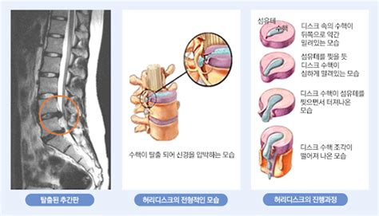

intervertebral disc (or intervertebral fibrocartilage) lies between adjacent vertebrae in the vertebral column. Each disc forms a fibrocartilaginous joint (a symphysis), to allow slight movement of the vertebrae, to act as a ligament to hold the vertebrae together, and to function as a shock absorber for the spine.
There is one disc between each pair of vertebrae, except for the first cervical segment,
the atlas. The atlas is a ring around the roughly cone-shaped extension of
the axis (second cervical segment). The axis acts as a post around which
the atlas can rotate, allowing the neck to swivel. There are 23 discs
in the human spine: 6 in the neck (cervical) region, 12 in the middle back
(thoracic) region, and 5 in the lower back (lumbar) region[3]
Discs are named by the vertebral body above and below. For example,
the disc between the fifth and sixth cervical vertebrae is designated
"C5-6".[4]